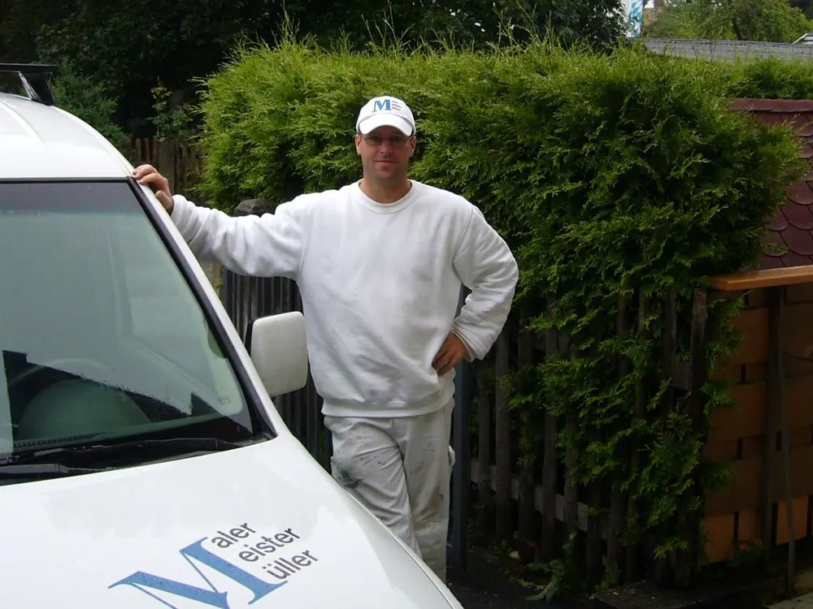
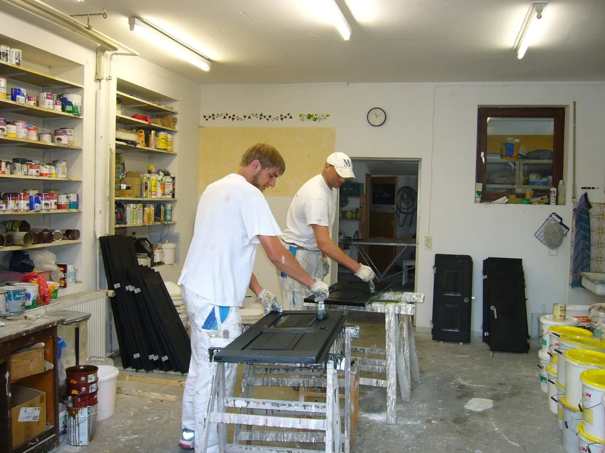
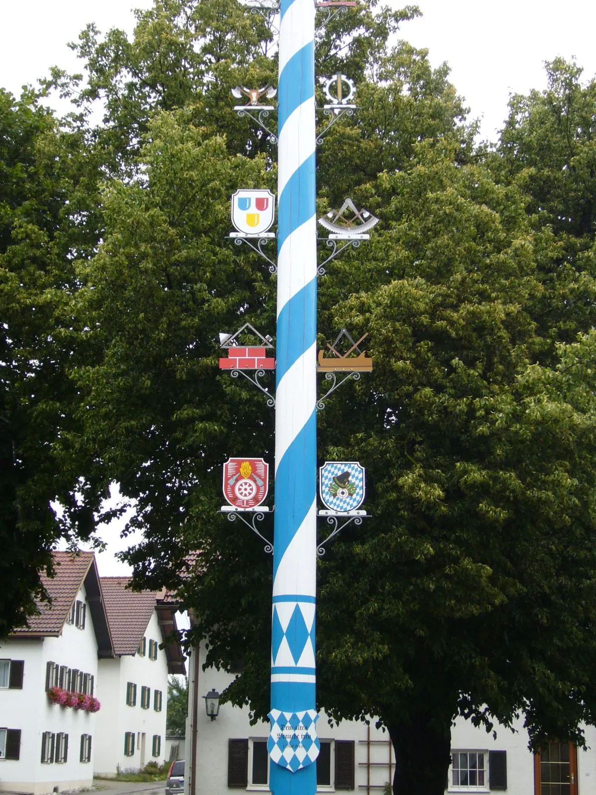
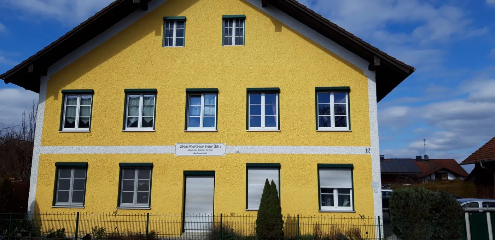

Pünktlichkeit
Zugesagte Termine werden gehalten — auch der Starttermin.
Seit 1976 in Weilheim-Unterhausen. Heute führt Dieter Müller den Betrieb.
Sein Vater Ludwig-Heinz Müller macht den Betrieb 1976 in Weilheim-Unterhausen auf. 2004 übernimmt Dieter, Malermeister wie er.
Er schaut sich jedes Projekt selbst an und steht danach mit auf der Baustelle. Wer hier anruft, redet mit dem Chef.

Dieter Müller und zwei Malergesellen, beide im eigenen Betrieb ausgebildet. Mehr sind wir nicht, und mehr wollen wir nicht werden.
Türen, Fenster und Möbel lackieren wir in der eigenen Werkstatt, nicht bei Ihnen im Zimmer. Auf der Baustelle steht dann immer dasselbe Team.


Kurze Wege, bekannte Gesichter — und Arbeiten, an denen man täglich vorbeifährt.
Weilheim-Unterhausen, seit 1976Daran können Sie uns auf jeder Baustelle messen — vom ersten Termin bis zur Rechnung.
Zugesagte Termine werden gehalten — auch der Starttermin.
Abgedeckt wird vorher, aufgeräumt wird nachher. Jeden Tag.
Fachgerecht und ehrlich, auch wenn die einfachere Lösung reicht.
Angemessen kalkuliert, ohne Überraschungen auf der Rechnung.

Ein Anruf genügt, dann schauen wir uns Ihr Projekt gemeinsam an.